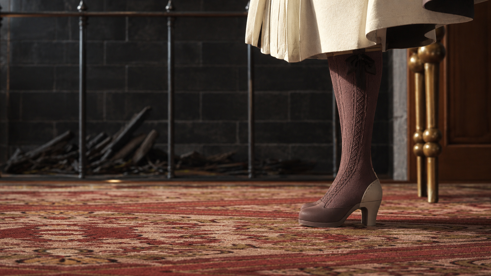
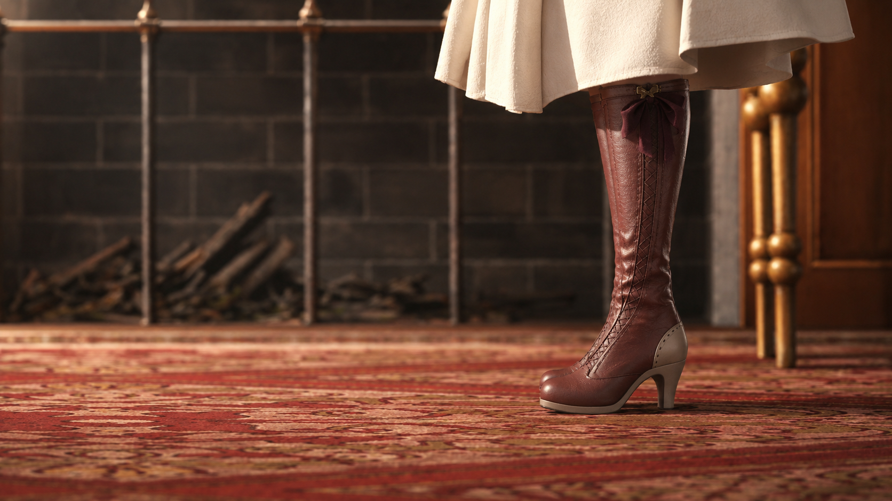

Architecture
Racetrack Grandstand & Facilities
Models and rendered views supporting the design of a racetrack grandstand and associated spaces, with a focus on façades, massing and spatial relationships.
Project typeArchitecture
My contributionDesign modeling / Architectural visualization
ToolsSketchUp / 3ds Max / D5
Project context
Project work at BYD Survey and Design Co., Ltd. I built models from design proposals and supported architectural and façade presentations.
What I did
- Supported the visual development of grandstand architecture and façade proposals.
- Modeled the racetrack, grandstand and associated facilities and produced rendered views.
- Updated models and viewpoints to support design discussions.
Work & process
5 / Open original image





Contribution & credits
Team project. My contribution was design modeling and architectural visualization; overall design belongs to the original team.